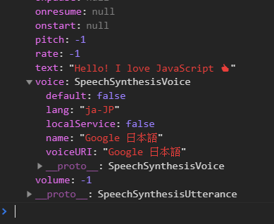

在這個單元中，我們要將輸入的文字轉為聲音，做出我們自己的 google 小姐。
SpeechSynthesisUtterance
可以想像是一個語音資訊的物件，包含內容、語言、音調、聲音、速率等。
我們可以透過定義一個變數來呼叫他:1
2const msg = new SpeechSynthesisUtterance();
console.log(msg)
SpeechSynthesisUtterance 屬性
透過console.log(msg)我們可以看到他的屬性有：
屬性
- SpeechSynthesisUtterance.lang：語言。
- SpeechSynthesisUtterance.pitch：音調。
- SpeechSynthesisUtterance.rate：速度。
- SpeechSynthesisUtterance.text：文字內容。
- SpeechSynthesisUtterance.voice：不同語言的聲音。
- SpeechSynthesisUtterance.volume：音量。
SpeechSynthesis
有了SpeechSynthesisUtterance物件(資料)後，我們要有一個像是控制器的東西
用來播放或暫停等功能。
方法
- SpeechSynthesis.getVoices()：取得一陣列，其中包含目前所有可用語言。
- SpeechSynthesis.pause()：暫停。（搭配resume）
- SpeechSynthesis.resume()：取消暫停。
- SpeechSynthesis.cancel()：移除所有的音訊。（停止播放）
- SpeechSynthesis.speak()：將一段發音加入發音庫，當前面的發音皆播放完成後，就會播放此發音。
資料參考
更多屬性和方法：MDN更多介紹
進入範例
1 | const voicesDropdown = document.querySelector('[name="voice"]'); |
一開始範例已經幫我們建立好對象和SpeechSynthesisUtterance了
取得語言
我們先將 speechSynthesis 這個控制器加上唯一的監聽事件 voiceschanged1
2
3
4
5
6
7
8function populateVoices() {
voices = this.getVoices()
let lanlist = voices.map((lan) => {
return `<option value="${lan.name}">${lan.name} (${lan.lang})</option>`
})
voicesDropdown.innerHTML = lanlist.join('')
}
speechSynthesis.addEventListener('voiceschanged', populateVoices)
透過getVoices()方法取得語言資料，可以console.log看看
並將資料渲染到html上
設定語言
當我們選擇語言時，也就是onchange時，
我們要將語言設定到msg物件的voice值裡面，
我們可以console.log(msg)看看SpeechSynthesisUtterance長什麼樣子：
裡面有很多值我們要設定進去。1
2
3
4
5
6
7function setVoice() {
msg.voice = voices.find(voice => voice.name === this.value);
console.log(msg)
//speechSynthesis.cancel();
//speechSynthesis.speak(msg);
}
voicesDropdown.addEventListener('change', setVoice);
注意：這邊的voice不能直接給他名稱msg.voice = this.valuethis.value是字串，正確的msg.voice格式是：

這樣一整筆的傳進去給msg
設定其他值
跟設定聲音一樣1
2
3
4
5
6
7
8function setOption() {
msg[this.name] = this.value;
speechSynthesis.cancel();
speechSynthesis.speak(msg);
};
options.forEach(function (option) {
option.addEventListener('change', setOption);
});
當我們改變這些值的時候，看看msg變化：
越來越多資料進去了！
控制播放和暫停
所以我們要操控speechSynthesis的方法1
2
3
4
5
6
7
8function speak() {
speechSynthesis.speak(msg);
};
function pause() {
speechSynthesis.cancel();
};
speakButton.addEventListener('click', speak);
stopButton.addEventListener('click', pause);
我們也可以在選擇語言後就自動播放，修改一下前面的setVoice涵式1
2
3
4
5
6
7function setVoice(e) {
msg.voice = voices.find(voice => voice.name === this.value);
console.log(msg)
speechSynthesis.cancel(); //先暫停
speechSynthesis.speak(msg); //再播放
}
voicesDropdown.addEventListener('change', setVoice);
類似前面操作audio，先暫停再播放的概念。
注意
當畫面載入後，msg物件其實還未收到任何資料(未觸發任何change事件)，
所以他不知道要講甚麼話，用甚麼語言，一開始的msg物件很多值都還是空的
避免這個問題我們可以預設先讓msg抓到text.value1
msg.text = document.querySelector('[name="text"]').value;
程式碼
1 | const msg = new SpeechSynthesisUtterance(); |